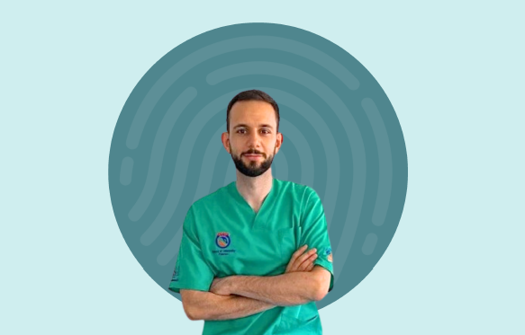

OSTEOMED
OSTEOMED

Un approccio globale alla salute che ascolta ogni segnale del tuo organismo per restituirti movimento, libertà e benessere duraturo.
OSTEOMED nasce dalla passione del Dott. Pasquale Pannuti per l'osteopatia come disciplina capace di ascoltare il corpo nella sua interezza. Ogni seduta è un dialogo tra professionista e paziente, pensata per individuare le cause profonde del disagio, non solo i sintomi.
Con anni di formazione e pratica clinica, il nostro studio offre un ambiente accogliente e professionale in cui la cura della persona è sempre al centro.
Conosci il dottore
Trattamento delle disfunzioni muscolo-scheletriche, dolori articolari, cervicalgia e lombalgia.
Approccio agli organi interni e alle loro relazioni con postura e mobilità corporea.
Tecnica delicata per riequilibrare il sistema nervoso centrale e le membrane craniali.
Trattamento dolce e sicuro per neonati e bambini: coliche, disturbi del sonno, plagiocefalia.
Supporto al benessere materno nelle diverse fasi della gravidanza e nel post-parto.
Prevenzione e recupero degli infortuni per sportivi amatoriali e professionisti.
Un colloquio approfondito per comprendere la storia del tuo corpo, le tue abitudini e i tuoi obiettivi.
Esame posturale e funzionale per individuare le restrizioni di mobilità e le disfunzioni presenti.
Tecniche manuali specifiche selezionate in base alle tue necessità per ripristinare l'equilibrio.
Piano di mantenimento e consigli per preservare i risultati raggiunti nel tempo.
"Dopo anni di lombalgia cronica, finalmente ho trovato sollievo duraturo. Il Dott. Pannuti è un professionista eccezionale."
"Ho portato mia figlia neonata per le coliche e i risultati sono stati sorprendenti già dalla prima seduta."
"Studio accogliente, professionalità alta e un approccio umano che fa sentire davvero ascoltati."
L'osteopatia è una disciplina manuale che considera il corpo come un'unità funzionale. Attraverso tecniche specifiche, l'osteopata individua e tratta le disfunzioni che limitano la mobilità e il benessere dell'organismo.
Il numero di sedute varia in base alla natura del problema e alla risposta individuale. In molti casi è possibile ottenere miglioramenti significativi in 3–5 incontri, ma il piano verrà definito insieme durante la prima visita.
Il trattamento osteopatico è generalmente indolore. Alcune tecniche possono provocare una sensazione di pressione o leggero fastidio momentaneo, ma il comfort del paziente è sempre la priorità.
Puoi prenotare compilando il modulo nella sezione contatti, chiamando direttamente lo studio o inviando un messaggio WhatsApp. Ti risponderemo entro 24 ore.
Compila il modulo o contattaci direttamente.
La prima visita
include una valutazione completa senza impegno.